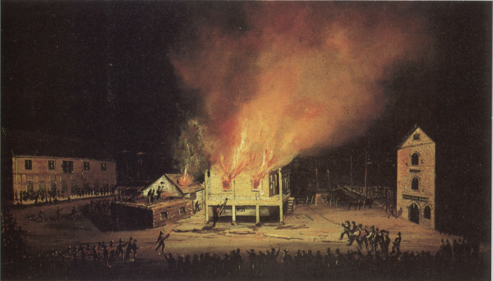

The Domain Name System is burning. The Blockchain to the rescue...

Goal: Convince you that this is most important problem to solve with a blockchain
- What is the Domain Name System?
- Exploitation of the Domain Name System
- DNSCrypt and DNSSEC are all about centralized trust
- Replacing the DNS system with a Blockchain?
The Domain Name System is the trustless heart of the Internet
The Domain Name System pairs urls to server address
- DNS is depended upon by every app and device
- 8 Root servers controlled by ICANN are the authoritative state of the system.
- Zero cyrptographic trust
The Certificate Authority system
- Creates a binding between a cryptographic key and a domain via a certificate authority
- Most devices trust over 1000 CAs for all domains
Exploiting the Domain Systems
Recent events in Turkey
- March 20th, Turkish government instructs all ISP DNS servers to stop resolving Twitter.com
- Turkish ISPs follow up by spoofing the IP addresses of public DNS servers
- DNS is the poor mans censorship system.
Ceritificate spoofing on Intelligence Networks
- The French government produced a fraudulent SSL certificate for google.com to MITM Google on their Intelligence land
Cryptography is for freedom and trust. Freedom and trust on the Internet is under attack.
Past protosals
- DNSSec: Sign official DNS records with key from some authority
- DNSCrypt: SSL for DNS
- Certificate transparency: Publish key->domain bindings
Store DNS info on the BlockChain?
The Blockchain is a machine for enforcing invariants.
The invariants of BitCoin are:
- Constant value in the system
- Transaction inputs and outputs are bound together
- All transactions are bound to at least 1 public key
Can Etherium enforce the Invariants of DNS?
- Each name record must be unique
- One public key to each record
- Transaction must guarantee a record moves from one key to the next
Solving the DNS problem is proof of principle for any Blockchain 2.0 technology
The mechanics of implementing TLS key verification,DNS lookups, registration and maintainence on thin devices need both effort and create opportunity. We need to avoid the mistakes of the past.
Every censorship creates a new go to market moment. These will only accelerate.